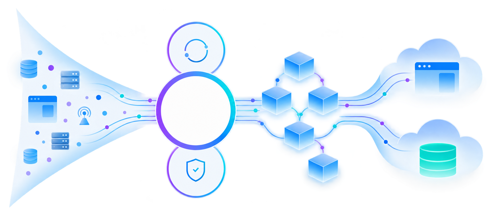
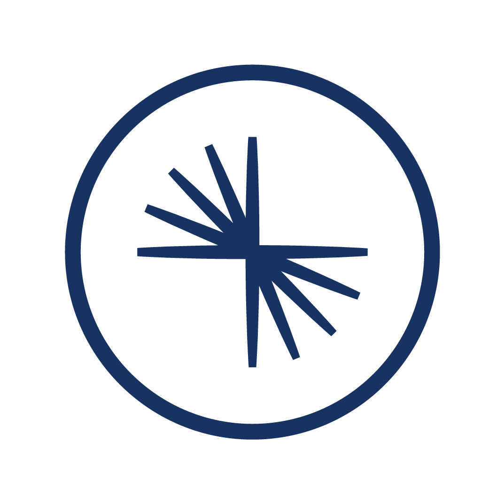

Splunk Platform
데이터를 검색 가능한 운영 정보로
다양한 소스의 데이터를 수집하고 검색·분석·시각화합니다. SPL 검색과 대시보드, 알림으로 조직에 필요한 정보를 확인합니다.
직접 운영하는 Splunk Enterprise
SaaS 방식의 Splunk Cloud Platform
플랫폼 기능 확인 ↗SaaS 방식의 Splunk Cloud Platform
융합소프트웨어 & IT 솔루션 전문기업
융합소프트웨어 & IT 솔루션 전문기업 오파스넷
SECURITY · OBSERVABILITY · DATA ANALYTICS
흩어진 데이터에서, 문제를 해결할 단서까지
Splunk는 로그와 이벤트 등 머신 데이터를 검색·분석하고,
보안 위협 탐지와 IT 서비스의 상태·성능 파악에 활용하는 데이터 플랫폼 및 솔루션 제품군입니다.
서로 다른 시스템의 데이터를 연결해 “무슨 일이 발생했는가”를 확인하고,
“왜 발생했는가, 무엇부터 대응해야 하는가”를 조사할 수 있도록 돕습니다.
데이터를 검색 가능한 운영 정보로
다양한 소스의 데이터를 수집하고 검색·분석·시각화합니다. SPL 검색과 대시보드, 알림으로 조직에 필요한 정보를 확인합니다.
탐지·조사·대응을 연결하는 보안 운영
보안 데이터를 분석하는 SIEM을 중심으로 위협을 탐지하고 조사합니다. 자산·사용자의 위험도와 관련 활동을 함께 검토해 대응 우선순위를 정할 수 있습니다.
서비스 장애의 원인과 영향을 파악
인프라 지표, 애플리케이션 트레이스와 관련 로그를 연결해 성능 문제를 조사합니다. OpenTelemetry 기반 수집으로 클라우드와 분산 서비스의 가시성을 확보합니다.
각 제품의 역할을 구분한 개요입니다. 보안·관측성 기능의 제공 범위와 라이선스, 연동 구성은 선택한 제품 및 계약에 따라 달라집니다.
수집한 데이터를 실제 조사와 대응에 활용해야 할 때 Splunk의 가치가 커집니다.
보안·네트워크·애플리케이션 데이터를 함께 검색하고 연관성을 분석합니다. 여러 시스템을 오가며 단서를 수작업으로 맞추는 부담을 줄일 수 있습니다.
통합 데이터 분석 근거 ↗Enterprise Security의 위험도 기반 분석으로 사용자·자산에 관련된 신호를 함께 평가합니다. 개별 알림뿐 아니라 맥락과 위험 수준을 보고 조사 대상을 정합니다.
위험도 기반 알림 공식 문서 ↗Observability의 메트릭·트레이스·로그를 활용해 서비스 성능 저하와 관련된 단서를 연결합니다. 분산된 서비스에서 문제 구간과 원인을 좁히는 데 도움이 됩니다.
장애 조사 워크플로 근거 ↗기능 개수보다, 우리 조직의 조사·분석·운영 요구를 얼마나 연결하는지 살펴보세요.
| 비교할 대안 | 선택할 때 확인할 점 | Splunk에서 주목할 강점 |
|---|---|---|
| 로그 수집·보관 중심 도구 | 보관 이후에도 다양한 소스를 함께 검색하고 업무별 분석을 만들 수 있는가? | 검색에서 분석·시각화까지SPL과 대시보드로 데이터를 반복 활용하고, 서로 다른 소스의 이벤트를 연결해 조사합니다. [1] |
| SIEM·보안 분석 솔루션 | 위험의 맥락을 반영해 탐지·조사·대응의 우선순위를 정할 수 있는가? | 사용자·자산 중심의 위험 분석Enterprise Security는 위험도, 연관 활동과 조사 워크플로를 연결합니다. 보안팀이 중요한 신호에 집중하도록 돕습니다. [2] |
| APM·인프라 모니터링 솔루션 | 개방형 수집 표준을 지원하며, 여러 관측 데이터를 연결해 원인을 조사할 수 있는가? | OpenTelemetry 기반 관측성지원되는 Collector 배포판과 계측 기능을 활용하고, 메트릭·트레이스·로그의 맥락을 연결해 문제를 조사합니다. [3] |
| 직접 조합·개발하는 분석 환경 | 데이터 연동과 기능 확장에 필요한 개발·유지보수 부담을 어떻게 관리할 것인가? | 앱·애드온 생태계 활용Splunkbase에서 데이터 입력, 분석 화면과 제품 연동을 위한 앱·애드온을 찾아 확장할 수 있습니다. [4] |
Splunk 공식 기능을 바탕으로 정리한 선택 기준이며, 특정 경쟁 제품에 해당 기능이 없다는 의미는 아닙니다. 비용·성능·운영 적합성은 데이터량, 보관 기간, 검색 부하와 구성에 따라 비교해야 합니다. 앱의 지원 주체와 호환 버전도 확인하세요.
Splunk Enterprise의 분산 배포를 설명하는 개념 구성입니다.
Observability Cloud는 위 인덱서 구성과 별도의 서비스입니다. 제품 간 연동 방식은 수집할 데이터와 도입 범위에 맞춰 설계합니다.
Splunk Enterprise 구성 요소 공식 문서 ↗신뢰할 수 있는 실시간 데이터 제품을 만드는 데이터 스트리밍 플랫폼
Confluent는 모든 데이터를 연결해 신뢰할 수 있고 재사용 가능한 실시간 데이터 제품으로 전환합니다.
Apache Kafka® 기반 스트리밍으로 이벤트를 발생 즉시 포착하고 원하는 곳에 지속적으로 전달합니다.
150개 이상의 사전 구축 커넥터가 레거시·클라우드·SaaS 시스템을 코드 부담 없이 연결합니다.
Apache Flink®는 도착하는 데이터를 변환·결합·분석해 즉시 활용 가능한 맥락을 만듭니다.
Stream Governance는 스키마·품질·계보·보안을 통합해 데이터 제품의 신뢰성을 높입니다.
오파스넷은 아키텍처 설계부터 구축, 마이그레이션, 성능 최적화와 운영을 지원합니다.


CUSTOMER STORY · NOTION
Notion은 Confluent Cloud를 실시간 이벤트 로깅과 Notion AI의 데이터 백본으로 활용합니다.